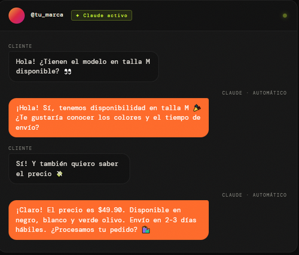

FEATURED PERSPECTIVE
El fin de las respuestas genéricas:
Claude llega a Instagram
Seguramente te ha pasado: abres Instagram y tienes 20 mensajes preguntando lo mismo. Hasta ahora, la opción era o pasar horas respondiendo manualmente para no perder el "toque humano"...
Tu bandeja de entrada nunca volverá a ser la misma.
Cuando un cliente envía un DM preguntando por disponibilidad de producto, Claude analiza el mensaje y construye una respuesta a medida, manteniendo al lead activo sin la necesidad del toque humano.
¿Cómo funciona exactamente?
El mecanismo es elegante en su simpleza. A través de plataformas de automatización sin código

💬
Respuesta a DMs
Claude detecta nuevos mensajes directos y genera respuestas personalizadas según el contexto de cada conversación
🗨️
Gestión de comentarios
Analiza y responde comentarios en publicaciones, manteniendo la consistencia del tono de marca automáticamente.
📊
Análisis de sentimiento
Clasifica el estado emocional de cada interacción para priorizar respuestas urgentes o detectar oportunidades
¿A quién beneficia más?
El impacto más inmediato lo sentirán los equipos de social media que gestionan cuentas con alto volumen de interacciones: e-commerces, marcas de moda, restaurantes, servicios de atención al cliente y creadores de contenido con comunidades grandes. Para ellos, responder mensajes manualmente representa horas de trabajo diario con alto riesgo de inconsistencia o demora.